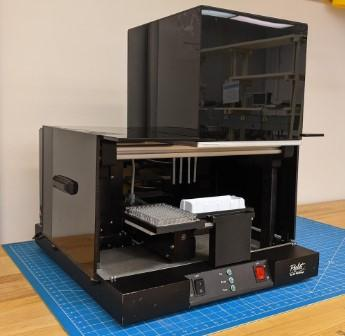

Mission
Reduce repetitive manual hydrogel dispensing and aspiration tasks while improving consistency and throughput.
Problem
Researchers were performing repetitive fluid handling operations manually, resulting in time-intensive workflows and variability between runs.
Approach
Developed an automated XYZ gantry platform capable of dispensing and aspirating fluids across standard well-plate formats using interchangeable reservoirs and custom nozzle heads.
Key Innovations
The system combined XYZ gantry automation, a modular reservoir architecture, high-volume and low-volume dispensing modes, and a custom FluidCAM GUI that eliminated the need for G-code programming.
Outcome
Delivered a fully functional prototype capable of automated fluid handling with approximately +/-5 uL precision and earned First Place at UBC Design & Innovation Day.

System Design
Front-view system layout showing the dispensing stage in home position with the gantry, working envelope, and fluid handling hardware organized for repeatable benchtop operation.
Dispensing Stage
Interchangeable stage layouts supported multiple reservoir formats, including a baseline dispensing layout, 1.5 mL tube configuration, and 25 mL reservoir configuration.

FluidCAM Interface
Custom GUI allowing researchers to generate dispensing procedures without writing code.